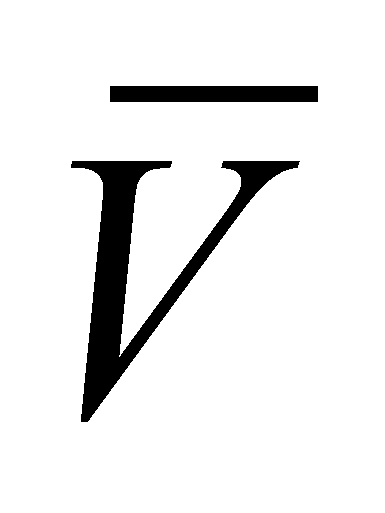
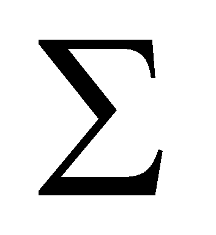
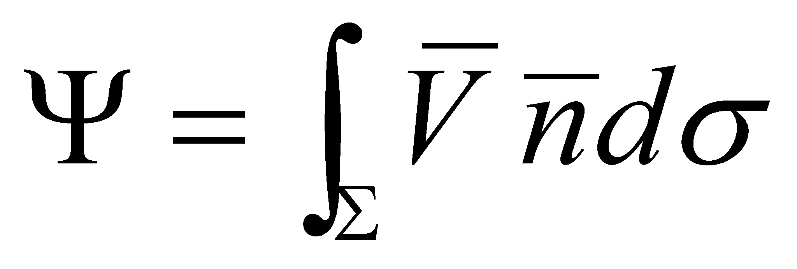
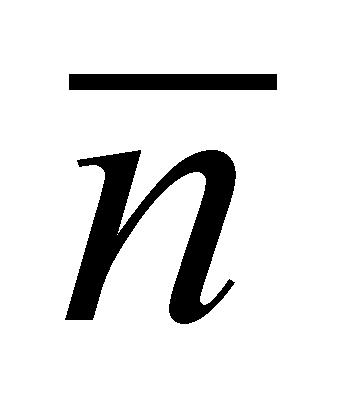
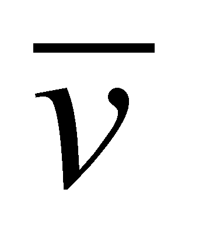

|
|
|
As it may be seen within the annex X.8, when dealing with mathematics concepts, more exactly according to the theory of vector fields, the notion of flux is used with the following meaning: Is named the flux of the vector , crossing through a certain surface , the value:
 (X.3.3.1)
where

is the normal line on the surface, and
 is a surface element “which surrounds” the application
point of the normal line. The amount
is
a scalar and it represents (in some situations) the quantity of the
amount
transported through that surface. According to the objectual
philosophy, the flux has a totally different meaning, because it is a
vectorial field (not a scalar), as it is also pointed-out in
chapter 5 which is entirely focused on the definition and
classification of this type of processual object. In exchange, the
relation X.3.3.1 is also valid in the present paper, but it defines
the global intensity of the flux carried by the amount
through
the surface
.
is a surface element “which surrounds” the application
point of the normal line. The amount
is
a scalar and it represents (in some situations) the quantity of the
amount
transported through that surface. According to the objectual
philosophy, the flux has a totally different meaning, because it is a
vectorial field (not a scalar), as it is also pointed-out in
chapter 5 which is entirely focused on the definition and
classification of this type of processual object. In exchange, the
relation X.3.3.1 is also valid in the present paper, but it defines
the global intensity of the flux carried by the amount
through
the surface
.
Another major difference between the interpretation of the flux notion from mathematics and the concept set by the objectual philosophy is that within the mathematics field, the flux of the velocity vector crossing through a surface may be easily approached, and in this case, the vector from the relation X.3.3.1 is the local velocity of a certain velocity field. Within the objectual philosophy, this kind of approach is not possible because here, the local vector of a flux is always a carrier vector, either the flux density vector (FDV applicable for the virtual flux model), or the flux quantum vector (FQV applicable for the objectual model) which were both defined in chapter 5, which associates to a transfer rate  a density of an amount which is carried by the flux.
Copyright © 2006-2011 Aurel Rusu. All rights reserved.